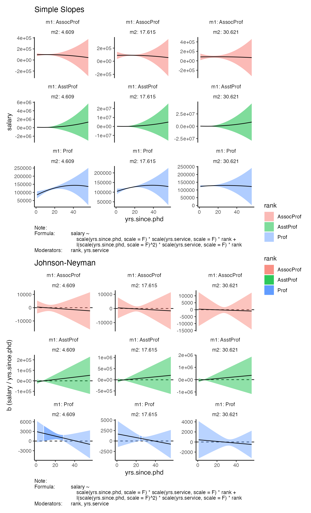

examples.Rmd## rank discipline yrs.since.phd yrs.service sex salary
## 1 Prof B 19 18 Male 139750
## 2 Prof B 20 16 Male 173200
## 3 AsstProf B 4 3 Male 79750
## 4 Prof B 45 39 Male 115000
## 5 Prof B 40 41 Male 141500
## 6 AssocProf B 6 6 Male 97000
model_fit <- lm(salary ~ scale(yrs.since.phd, scale = F) + I(scale(yrs.since.phd, scale = F)^2), df)
tidy(model_fit)## # A tibble: 3 × 5
## term estimate std.error statistic p.value
## <chr> <dbl> <dbl> <dbl> <dbl>
## 1 (Intercept) 124265. 1744. 71.3 3.29e-227
## 2 scale(yrs.since.phd, scale = F) 1231. 102. 12.0 1.11e- 28
## 3 I(scale(yrs.since.phd, scale = F)^2) -63.7 7.25 -8.80 4.46e- 17
get_plot(model = model_fit,
x_var = 'yrs.since.phd')##
## simple slopes:
## rh b se t p
## 1 I(scale(yrs.since.phd, scale = F)^2) -63.73916 7.24579 -8.796717 4.457591e-17
## b_ci_95_ll b_ci_95_ul
## 1 -77.98441 -49.49392
##
## johnson-neyman intervals:
## range
## 1 [1, 29.6] U [35.1, 56]
model_fit <- lm(salary ~ scale(yrs.since.phd, scale = F) * rank + I(scale(yrs.since.phd, scale = F)^2) * rank, df)
tidy(model_fit)## # A tibble: 9 × 5
## term estimate std.error statistic p.value
## <chr> <dbl> <dbl> <dbl> <dbl>
## 1 (Intercept) 70264. 106559. 0.659 0.510
## 2 scale(yrs.since.phd, scale = F) -726. 13015. -0.0558 0.956
## 3 rankAssocProf 19930. 106717. 0.187 0.852
## 4 rankProf 58479. 106574. 0.549 0.584
## 5 I(scale(yrs.since.phd, scale = F)^2) -6.53 391. -0.0167 0.987
## 6 scale(yrs.since.phd, scale = F):rankAsso… 284. 13019. 0.0218 0.983
## 7 scale(yrs.since.phd, scale = F):rankProf 1411. 13017. 0.108 0.914
## 8 rankAssocProf:I(scale(yrs.since.phd, sca… 11.2 392. 0.0286 0.977
## 9 rankProf:I(scale(yrs.since.phd, scale = … -37.6 392. -0.0961 0.924
get_plot(model = model_fit,
x_var = 'yrs.since.phd',
m_vars = 'rank',
facet_wrap_opts = list(ncol = 3,
scales = 'free_y',
labeller = 'label_both'))##
## simple slopes:
## rank rh b se
## 1 AsstProf I(scale(yrs.since.phd, scale = F)^2) -6.531685 391.37140
## 2 AssocProf I(scale(yrs.since.phd, scale = F)^2) 4.684854 25.02869
## 3 Prof I(scale(yrs.since.phd, scale = F)^2) -44.147510 12.63665
## t p b_ci_95_ll b_ci_95_ul
## 1 -0.01668923 0.9866931000 -776.00570 762.94230
## 2 0.18717935 0.8516179000 -44.52397 53.89368
## 3 -3.49360890 0.0005314837 -68.99238 -19.30263
##
## johnson-neyman intervals:
## rank range
## 1 AsstProf no significant values
## 2 AssocProf no significant values
## 3 Prof [1, 25.75] U [34, 56]
model_fit <- lm(salary ~ scale(yrs.since.phd, scale = F) * scale(yrs.service, scale = F) + I(scale(yrs.since.phd, scale = F)^2) * scale(yrs.service, scale = F), df)
tidy(model_fit)## # A tibble: 6 × 5
## term estimate std.error statistic p.value
## <chr> <dbl> <dbl> <dbl> <dbl>
## 1 (Intercept) 1.25e+5 1848. 67.5 1.30e-217
## 2 scale(yrs.since.phd, scale = F) 9.63e+2 314. 3.06 2.34e- 3
## 3 scale(yrs.service, scale = F) 1.20e+2 293. 0.409 6.83e- 1
## 4 I(scale(yrs.since.phd, scale = F)^2) -1.26e+1 22.7 -0.558 5.77e- 1
## 5 scale(yrs.since.phd, scale = F):scale(… -6.27e+1 26.2 -2.40 1.70e- 2
## 6 scale(yrs.service, scale = F):I(scale(… 7.27e-1 0.536 1.36 1.76e- 1
get_plot(model = model_fit,
x_var = 'yrs.since.phd',
m_vars = 'yrs.service',
facet_wrap_opts = list(ncol = 3,
scales = 'free_y',
labeller = 'label_both'))##
## simple slopes:
## yrs.service rh b se
## 1 4.609 I(scale(yrs.since.phd, scale = F)^2) -22.104140 21.53401
## 2 17.615 I(scale(yrs.since.phd, scale = F)^2) -12.648520 22.67723
## 3 30.621 I(scale(yrs.since.phd, scale = F)^2) -3.192904 25.72983
## t p b_ci_95_ll b_ci_95_ul
## 1 -1.0264758 0.3053019 -64.44107 20.23279
## 2 -0.5577631 0.5773254 -57.23308 31.93604
## 3 -0.1240935 0.9013050 -53.77902 47.39321
##
## johnson-neyman intervals:
## yrs.service range
## 1 4.609 [1, 32.9]
## 2 17.615 [14.75, 31.25]
## 3 30.621 no significant values
model_fit <- lm(salary ~ scale(yrs.since.phd, scale = F) * scale(yrs.service, scale = F) * rank + I(scale(yrs.since.phd, scale = F)^2) * scale(yrs.service, scale = F) * rank, df)
tidy(model_fit)## # A tibble: 18 × 5
## term estimate std.error statistic p.value
## <chr> <dbl> <dbl> <dbl> <dbl>
## 1 (Intercept) 503461. 1091234. 0.461 0.645
## 2 scale(yrs.since.phd, scale = F) 59701. 137755. 0.433 0.665
## 3 scale(yrs.service, scale = F) 24232. 68880. 0.352 0.725
## 4 rankAssocProf -413743. 1091250. -0.379 0.705
## 5 rankProf -373690. 1091236. -0.342 0.732
## 6 I(scale(yrs.since.phd, scale = F)^2) 2105. 4285. 0.491 0.624
## 7 scale(yrs.since.phd, scale = F):scale(y… 3397. 8635. 0.393 0.694
## 8 scale(yrs.since.phd, scale = F):rankAss… -60076. 137758. -0.436 0.663
## 9 scale(yrs.since.phd, scale = F):rankProf -58977. 137755. -0.428 0.669
## 10 scale(yrs.service, scale = F):rankAssoc… -24547. 68889. -0.356 0.722
## 11 scale(yrs.service, scale = F):rankProf -24288. 68881. -0.353 0.725
## 12 scale(yrs.service, scale = F):I(scale(y… 120. 267. 0.449 0.654
## 13 rankAssocProf:I(scale(yrs.since.phd, sc… -2124. 4286. -0.496 0.620
## 14 rankProf:I(scale(yrs.since.phd, scale =… -2127. 4285. -0.496 0.620
## 15 scale(yrs.since.phd, scale = F):scale(y… -3377. 8636. -0.391 0.696
## 16 scale(yrs.since.phd, scale = F):scale(y… -3446. 8635. -0.399 0.690
## 17 scale(yrs.service, scale = F):rankAssoc… -119. 267. -0.447 0.655
## 18 scale(yrs.service, scale = F):rankProf:… -119. 267. -0.445 0.657
get_plot(model = model_fit,
x_var = 'yrs.since.phd',
m_vars = c('rank', 'yrs.service'),
facet_wrap_opts = list(ncol = 3,
scales = 'free_y',
labeller = 'label_both'))##
## simple slopes:
## rank yrs.service rh b
## 1 AsstProf 4.609 I(scale(yrs.since.phd, scale = F)^2) 547.027100
## 2 AssocProf 4.609 I(scale(yrs.since.phd, scale = F)^2) -26.130460
## 3 Prof 4.609 I(scale(yrs.since.phd, scale = F)^2) -35.782930
## 4 AsstProf 17.615 I(scale(yrs.since.phd, scale = F)^2) 2104.608500
## 5 AssocProf 17.615 I(scale(yrs.since.phd, scale = F)^2) -19.316190
## 6 Prof 17.615 I(scale(yrs.since.phd, scale = F)^2) -22.111880
## 7 AsstProf 30.621 I(scale(yrs.since.phd, scale = F)^2) 3662.190000
## 8 AssocProf 30.621 I(scale(yrs.since.phd, scale = F)^2) -12.501930
## 9 Prof 30.621 I(scale(yrs.since.phd, scale = F)^2) -8.440835
## se t p b_ci_95_ll b_ci_95_ul
## 1 912.45160 0.5995135 0.5491887 -1247.07450 2341.12860
## 2 83.69617 -0.3122062 0.7550555 -190.69750 138.43650
## 3 34.62964 -1.0333034 0.3021208 -103.87320 32.30736
## 4 4284.77020 0.4911835 0.6235810 -6320.29080 10529.50790
## 5 93.48957 -0.2066134 0.8364228 -203.13940 164.50700
## 6 29.64982 -0.7457679 0.4562699 -80.41062 36.18686
## 7 7743.35400 0.4729462 0.6365238 -11563.12550 18887.50540
## 8 116.17050 -0.1076170 0.9143564 -240.92140 215.91760
## 9 29.19251 -0.2891438 0.7726294 -65.84041 48.95874
##
## johnson-neyman intervals:
## rank yrs.service range
## 1 AsstProf 4.609 no significant values
## 2 AssocProf 4.609 no significant values
## 3 Prof 4.609 [8.15, 27.95]
## 4 AsstProf 17.615 no significant values
## 5 AssocProf 17.615 no significant values
## 6 Prof 17.615 [24.1, 25.75]
## 7 AsstProf 30.621 no significant values
## 8 AssocProf 30.621 no significant values
## 9 Prof 30.621 no significant values## Joining with `by = join_by(m1, m2)`
## Joining with `by = join_by(m1, m2)`
## Joining with `by = join_by(m1, m2)`
## Joining with `by = join_by(m1, m2)`
## Joining with `by = join_by(m1, m2)`
## Joining with `by = join_by(m1, m2)`
## Joining with `by = join_by(m1, m2)`
## Joining with `by = join_by(m1, m2)`
## Joining with `by = join_by(m1, m2)`